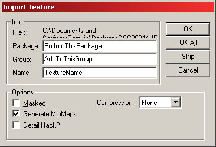
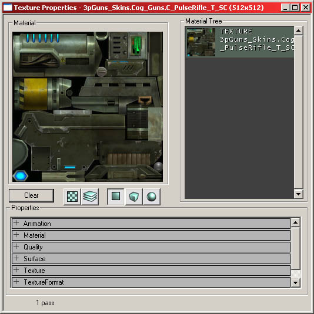

UDN
Search public documentation:
TextureBrowserReference
日本語訳
한국어
Interested in the Unreal Engine?
Visit the Unreal Technology site.
Looking for jobs and company info?
Check out the Epic games site.
Questions about support via UDN?
Contact the UDN Staff
한국어
Interested in the Unreal Engine?
Visit the Unreal Technology site.
Looking for jobs and company info?
Check out the Epic games site.
Questions about support via UDN?
Contact the UDN Staff
Using the Texture Browser and UTX Animation Packages
Document Summary: A comprehensive reference for the Texture Browser and importing .UTX packages. Document Changelog: Last updated by Tom Lin (DemiurgeStudios?) for content creation. Original author - Tom Lin (DemiurgeStudios?).Introduction
A .UTX file is a repository for a group of textures, and files derived from such textures (such as combiners and shaders). The browser for these files does much more than simply store them, however - it allows for manipulation of alpha channels, panning, etc. Texture artists in particular will be spending a fair bit of time in the texture browser, as will shader creators.Browser Layout

- 1: Pull down Menus. These duplicate the functionality of the buttons, and sometimes extend them.
- 2: Browser tabs. Textures should be selected, of course.
- 3: The toolbar buttons. The more heavily used functions have places here.
- 4: Tabs. Package management tabs/buttons.
- 5: Main texture display window.
- 6: Name filter for current package.
Pull Down Menus
File
Import
This lets you add more textures to a package.
- Package: The name of the package you will import into.
- Group: The group within the package the texture will be classified under. This field can be left blank, if no group is desired.
- Name: The name the texture will be given. Note that the filename of the imported texture can be changed on import.
- Masked: This checkbox appears to be broken. If you want to change the alpha/mask properties of your texture, you must do it in the properties area.
- Generate MipMaps: This is checked by default. This will blur your texture at distance, so texture artifacting will be less obvious.
- Detail Hack?: If you are creating a detail texture, this should be checked.
Export (R-Click)
This does not work. This option also appears when you Right-click a texture.Edit
Properties (R-Click)
This will bring up the texture properties window, it replicates the functionality of the button.Duplicate (R-Click)
This will make another copy of a texture. Upon choosing this option, you will be given the ability to make a new package and group, and rename the texture. You can also put it into an existing package. Make sure that you have loaded the entire packageRename (R-Click)
This allows you to move the selected texture to a new package or a new group. Also lets you rename the texture.Remove from Level (R-Click)
Removes the texture from all BSP in the level with this texture applied.Cull Unused Textures
When the level is saved, all the back-facing textures will be removed. These textures will not have been visible to the player, but if not culled will still be loaded and take memory.Load Entire Package
Loads all the textures from a package into the browser. This function is duplicated in a button.Detail Hack (R-Click)
If you are creating a detail texture from an existing texture in the package, you will receive a warning window. This process will change the mipmaps for the texture, and is irreversible.Replace Textures
Will swap out a texture in the world and replace it with another, designated texture. Appears to be broken?Previous/Next Group
Navigate between groups. Replicates a button functionality.Delete (R-Click)
Remove this texture from the package entirely.View
This lets you see the the textures at different scales, simply for convenience.Tools
Compress (R) : lets you change the level of DirectX texture compression applied to a texture. At least in theory. Broken?Filter
This allows you to selectively show the different types of materials in your packages."In Use" Filter
This allows you to selectively show the textures that are applied to different types of level geometries. You must be in the `In use' tab of the main texture window to see the results of this.Toolbar Buttons
 These buttons have some of the more commonly used functionality from the pull-down menus.
These buttons have some of the more commonly used functionality from the pull-down menus.
Open Package
If a .UTX package isn't already loaded into the drop-down list of packages, you can open one with this button.Save Package
Pretty self-explanatory. If you change your package, make sure to save it - not saving before running a level in the editor is a common mistake.Texture Properties
 Clicking the Properties button will lead to you the texture properties window.
Clicking the Properties button will lead to you the texture properties window.

Buttons
This has been covered in another document. See the Material Tutorial for more information.Animation
These properties control making animations with textures. Texture animations are a series of textures that cycle. Each texture defines an "AnimNext" frame which is a texture that is the next frame of the animation.AnimNext
A texture that is the next frame of animation to play.MaxFrameRate
The fastest the animation should be allowed to play at in frames per second.MinFramRate
The slowest the animation should be allowed to play at in frames per second.PrimeCount
The number of frames into a texture's animation that the animation will start at. For example; in a 15 frame animation, if the PrimeCount is set to 5, it will start playing at frame 5. This works for all animated textures.Material
FallbackMaterial
A backup material, in case a video card doesn't happen to support the primary material effects. You can turn on "Render Emulation" in the editor (menu) and game ("renderemulate gf2" console command) to make it behave as if you have a lower model video card, if you want to see your fallbacks at work. If you don't specify a fallback, it'll fall back to the bubble texture. This section of the .UTX browser has been covered in other docs. See the MaterialTutorial for more information.Quality
bHighColorQuality
This is obsolete, and does nothing. Ignore.bHighextureQuality
This is obsolete, and does nothing. Ignore.Surface
bAlphaTexture
If your texture has an 8-bit alpha channel (256 levels of transparency), then this should be set to True.bMasked
If your texture has a 1-bit alpha channel (2 levels of transparency), then this should be set to True. Note that bAlphaTexture and bMasked can both be set to True at the same time, but the texture will be treated as if it were masked.bTwoSided
If your texture will be applied to geometry that is visible from both sides (a cape, for example) then set this to True. Note that there is a performance impact when you use this, so don't turn it on indiscriminately.Texture
Detail
This field allows you to set a texture as a `Detail Texture.' This is a modifier layer that will be laid on top of the existing texture. It will show up only when you get close to the surface, and helps textures appear more complex when viewed from up close. This will use the RGB layers of a texture, not the alpha channel.Detail Scale
The default Detail Scale is 8, meaning the detail texture is drawn 8 times vertically and 8 times horizontally for each time the parent texture is drawn once. Be sure that the Detail Scale is set appropriately for the parent texture; perhaps the parent texture is very small, in which case you may not want the detail texture to draw 8x8 times per instance of the parent.LODSet
This is intended to control filtering on textures, and allow user-definedNormalLOD
Ignore this field.Palette
The palette object for Palettized (P8) textures. Doesn't ever need to be touched, don't worry about it.UClamp
The size of the repeated or locked texture size.UClampMode
This sets whether or not texture wrapping/repetition is possible. Works on the X-axis.VClamp
The size of the repeated or locked texture size.VClampMode
This sets whether or not texture wrapping/repetition is possible. Works on the Y-Axis.TextureFormat
Format
This indicates what compression type the texture has been stored as. For more on the compression types, see the UnrealTexturing doc.Load Entire Package
 The texture browser is somewhat unintuitive at times - when a .UTX package is loaded, not every texture in that package will necessarily be displayed. Only those textures in use will be shown; to force all the textures in the package to appear, use this button.
The texture browser is somewhat unintuitive at times - when a .UTX package is loaded, not every texture in that package will necessarily be displayed. Only those textures in use will be shown; to force all the textures in the package to appear, use this button.
Previous Group
 This will navigate backwards through all the available groups in a package. You can also navigate through groups by using the pull-down.
This will navigate backwards through all the available groups in a package. You can also navigate through groups by using the pull-down.
Next Group
This will navigate backwards through all the available groups in a package. You can also navigate through groups by using the pull-down.Tabs
Full
The complete contents of the currently open texture package will be opened here.Package Name
This Package field refers to an individual .UTX file (texture package). The pull down list lets you navigate between packages quickly.Group Name
On import of a texture in to a .UTX, you are given the option of assigning it to a group within that .UTX package. This lets you sort through your packages more logically, as opposed to all the textures appearing willy-nilly on the same organizational level.! Button
 This is the realtime preview button. This lets you see the result of textures with additional layers of effects over the base layer of texture. For example, a texture may have a panner attached to it, which will animate in the browser.
This is the realtime preview button. This lets you see the result of textures with additional layers of effects over the base layer of texture. For example, a texture may have a panner attached to it, which will animate in the browser.

All Button
 This button will show all the loaded textures spread among all the different groups.
This button will show all the loaded textures spread among all the different groups.